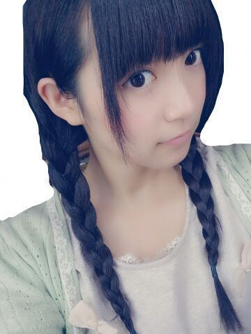
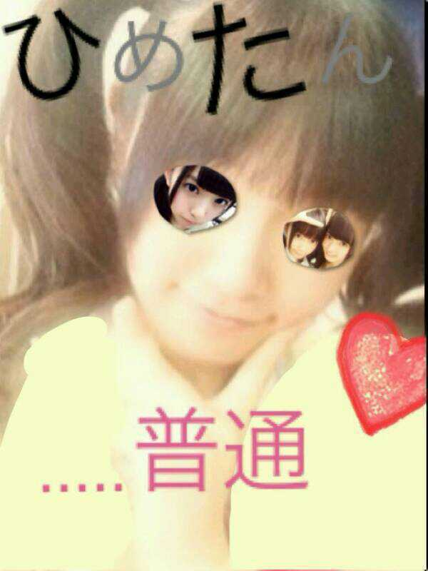
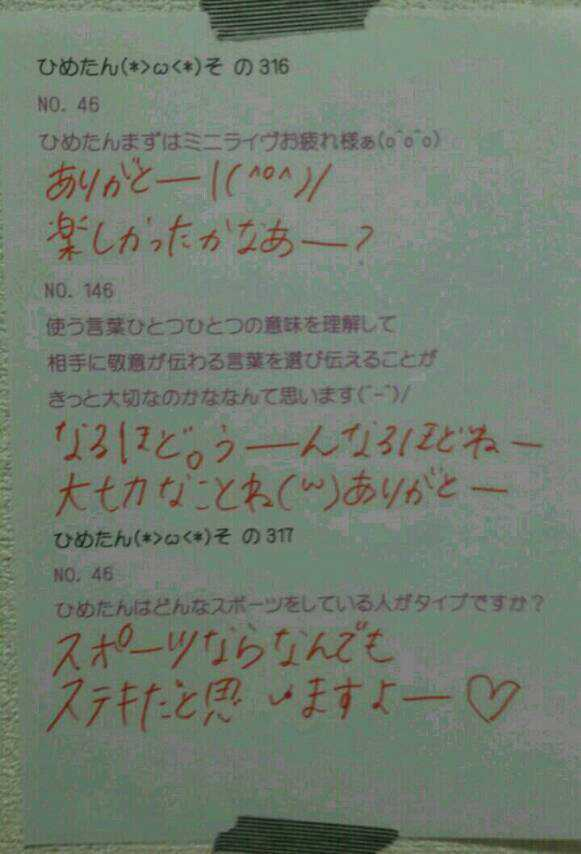

| 2013/10 21 Mon | ひめたん(*>ω<*)そ の358 |
おーさーげっはいはい
げーんーきっはいはい
きーりーん

３文字しりとりです
終わってしまいました。
今日はめざましライブ！
遊びに来てくださったみなさん
ありがとうございました( ´ ▽ ` )
大阪は乃木坂ちゃんが担当とゆーことで
しっかりライブしてきましたよー
セットリストは
かなりん (中田花奈ちゃん)ブログまで。
コウモリよ パフォーマンスしたあああああっ
ライブ行ったよって方は
ぜひ感想をきかせてくださーいねまってるねー
めざましテレビさんが
ライブの様子を撮ってくださってると思うので
オンエアもぜひチェックしてみてねっ
ひめたんは毎朝めざましテレビ派ですヽ(^0^)ノ
あすかりんから。
ひめたんのこと
好きか嫌いか聞かれたら

ほんとはだいすきなくせにねー
もーかわいーねー
あしゅりん (齋藤飛鳥ちゃん)ありがとー(*^ω^*)
昨日の乃木どこ観てくださったかなー？
よかったら感想教えてねー
そして予告にあったように
来週はハロウィン企画！
コスプレしてハロウィンパーティーしました(ω)
楽しかったーぜひ観てくださいねー♪
乃木坂46 1st写真集「乃木坂派」
いよいよ明日発売日ですよー
もうフラゲした方もいるかなー？
みんなかわいいからぜひチェックしてね∩^ω^∩
オフショットとか撮影のエピソードとか
ブログで書きたいこといっぱいあるんだー
はやく明日になーれー♪

 ひめたんはどんな本読むのー？
ひめたんはどんな本読むのー？
雑誌とか？
そうだねー最近はあんまし小説系読んでないなー
雑誌もね読むんだけどね、
毎月絶対この雑誌買う！って決まってないんだー
だから服のセンスないのかな(´・ω・｀)
年下の女の子ヲタってどぅかなぁ？
とってーも嬉しいよーありがとう♪
妹ちゃんになってほしい(〃ω〃)
もっともっと仲良くなりたいなっ
 とーってもきれい目な服装と、
とーってもきれい目な服装と、
ちょっとチャラいのだったら、
ひめたんはどっちが好き？
どっちがいいーとか一概に言えないよねー
似合ってればいーと思いますよう
ちなみにピンクが似合う男性はステキよ。
授業中ぼっちになりがちです
ええ、日によってはボッチ飯です。
こんなボッチメシストをどう思いますか？
............ちょっと長くなりすぎたので
一言でまとめると、ひめたん薬指細くない？
うん、どこをツッコめばいーかわかんないけど
ボッチメシスト。わーなんか
プロフェッショナルな響きがしますね( ^ω^ )
ひめたんの指はぷにぷにしてるよー
ぷにぷに女子！ぷにじょ！
ひめきゅんさんの発音は
ひめきゅん↑ さん？ひ↑ めきゅんさん？
ひめきゅん↑さんって
なんとなくひめたんは呼んでおる
ひ↑めきゅんさん派もいるらしいぜ☆
ひめたんは、どんな筆箱使ってますか？
ぴんくマイメロちゃん！
最近の癖は
みんなのひじとかひざとかを
すりすりすること。
なんてゆーか、あの
自分は骨感を求めてるんだと(´-ω-`)多分

いつもコメントたくさんありがとうっ
(＊´・ω・＊)
コメント(466)
2013/10/21 23:54